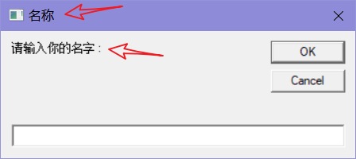
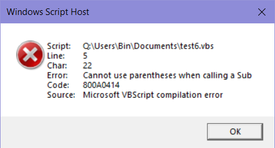

声明，注释
REM 这里是注释，这是一些VBS基本的语法
Dim name,msg '用 Dim 声明 name 和 msg 两个变量
msg = "请输入你的名字：" '赋予字符串值给msg变量
name = Inputbox(msg, "名称")
msgbox nameDim用来声明一个变量，在VBS中，变量类型并不是那么重要，就是说VBS会帮你自动识别变量类型，而且变量在使用前
不一定要先声明，程序会动态分配变量空间。如果要在声明的同时，赋予变量值，可以这么写。加一个冒号，然后声明即可Dim sPathOutputFolder : sPathOutputFolder = ""Inputbox和Msgbox是VBS内建的函数，一个函数就相当于一个”黑箱”，有输入(参数)和输出(返回值)，一个函数可以有返回值也可以没有，可以有参数也可以没有。
Inputbox的两个参数对应下面的两个箭头指向
声明其他
Dim arrAllProducts() '声明Array，数组 Dim dicFolders '声明字典 Const CSV = "," '声明常量
在变量声明后，但是不赋值，用IF判断时，可等于0
dim test
if test = 0 then msgbox "0" sub，function
- sub 不返回执行的结果
- function 可以返回函数执行的结果
局部或全局变量
在sub和function里面声明的变量，只在声明的函数里面起作用，如下的 iNum2
在函数外声明的为全局变量，所有的函数通用。
dim iNum1
sTest
msgbox iNum1 '显示结果为 1
msgbox iNum2 '显示结果为空
sub sTest()
dim iNum2 = 2
iNum1 = 1
end sub
调用函数的一些规范（坑）
VBS 在调用函数的时候，是有一些坑的。
如果函数
带有参数，请参考如下例子：Today = "Thusday" YourName = "Bin" test YourName, Today '可以 call test(YourName, Today) '可以 call test YourName, Today '错误格式，不允许 test(YourName, Today) '错误格式，不允许 function test(Name,Day) msgbox "Hi, " & Name & ". Today is " & Day end function报错的提醒：

调用函数做布尔判断等操作时候，请用用这种格式：
If RegEnumValues (hDefKey, sSubKeyName, arrNames, arrTypes) Then 'RegEnumValues 是一个函数，括号中是它的参数如果函数
没有参数，那调用的方法随意call test '可以 test '可以 test() '可以 call test()'可以 function test msgbox "Hi" end function
内置函数方法
UCase Mid Len
fCScript = (UCase(Mid(Wscript.FullName, Len(Wscript.Path) + 2, 1)) = "C") - UCase: 把文字转成大写，对应LCase（转成小写）。用法
UCase(string) - Mid: 提取一部分数据。用法
Mid(String, Start, Length)。类似的还有 Left，Right 方法test = "How are you?" test2 = mid(test,1,4) '从第一个字符开始，抓取4个字符(包括空格) msgbox test2 '显示 How - Len： 统计一段文本的长度
- 注意：这小段代码其实是一个布尔判断，fCScript 的结果 为
true或false。解释下作用把，就是判断当前的环境是CStript还是WSript
Left Instr
f64 = Instr(Left(oItem.SystemType, 3), "64") > 0 Left：从左边第一个字符开始，抓取3个字符
Instr：用法
InStr(Start, String, Substring, Compare)。Start，Compare 是可选的。返回找到第一个找到的位置
Compare 值：0 Binary comparison (case sensitive)
1 Text Comparison (case insensitive)
2 Compare information inside database
InStr("ABCDE ABCDE", "C") Output: 3 '后面的c就不管了 InStr(4, "ABCDE ABCDE", "C") Output: 9
这小段代码是一个布尔判断，判断系统是否为64位
Set oMsi = CreateObject("WindowsInstaller.Installer")
msgbox oMsi.Version ' output 5.0.17763.557
msgbox (Instr(oMsi.Version, ".") - 1) 'output 1
iWiVersionMajor = Left(oMsi.Version, Instr(oMsi.Version, ".") - 1) 'output 5
replace
Replace(String, FindSubstring, ReplaceSubstring, Start, Count, Compare)
String
The String argument is the string to be searched.FindSubstring
The FindSubstring argument is the substring you are searching for inside the string.ReplaceSubstring
The ReplaceSubstring argument is the the new substring string that you wish to insert inside the string.Start
The optional Start argument specifies the position number, counting from the left, where you wish to start the search.Count
The optional Count argument specifies how many times to replace the substring.Compare
The optional Compare argument must only use either a constant or value from the Comparison Constants table.CONSTANT VALUE DESCRIPTION VBBinaryCompare 0 Binary comparison VBTextCompare 1 Text Comparison VBDataBaseCompare 2 Compare information inside database
Replace("How now brown cow?", "brown", "purple")
Output:
How now purple cow?join
Join(Array, Delimiter)
将 Array 组合成 String，与它相反的 Split
The optional Delimiter argument specifies the characters (including blanks) you wish to place between each element. If this argument is not specified, the default is to place a blank space between each element. If you wish to have no spaces, use a double quote, “”, for the argument.
Dim cowarray(10)
cowarray(0) = "How"
cowarray(1) = "now"
cowarray(2) = "brown"
cowarray(3) = "cow?"
Join(cowarray)
Output:
How now brown cow?循环或判断
我觉得这个很有用，就来作为例子吧
For i = 1 To 4 '从1循环到4
Select Case i 'Case 选择，变相相当于 if 判断
Case 1 : lAccPermLevel = KEY_QUERY_VALUE
Case 2 : lAccPermLevel = KEY_SET_VALUE
Case 3 : lAccPermLevel = KEY_CREATE_SUB_KEY
Case 4 : lAccPermLevel = DELETE
End Select '注意要结束Case
'Not，非。
If Not RegCheckAccess(hDefKey, sSubKeyName, lAccPermLevel) Then
fIsAdmin = False
Exit for '马上退出循环，不在执行剩下的循环
End If
Next 'i '用 Next 结束 For 循环这个是单行的IF判断语句，不需要结束符号
If sPathOutputFolder = "" Then sPathOutputFolder = "%TEMP%" 在不知道数组的大小情况下，遍历整个数组的方法，重点在 UBound
For iValueName = 0 To UBound(arrNames) 判断变量类型
IsArray(varName)
IsDate(varName)
IsEmpty(varName)
IsNull(varName)
IsNumeric(varName)
IsObject(varName)
VarType(Varname):
返回的值：
CONSTANT VALUE DESCRIPTION
VBEmpty 0 Uninitialized
VBNull 1 Contains no valid data
VBInteger 2 Integer subtype
VBLong 3 Long subtype
VBSingle 4 Single subtype
VBDouble 5 Double subtype
VBCurrency 6 Currency subtype
VBDate 7 Date subtype
VBString 8 String subtype
VBObject 9 Object
VBError 10 Error subtype
VBBoolean 11 Boolean subtype
VBVariant 12 Variant (only use for arrays of variants)
VBDataObject 13 Data access object
VBDecimal 14 Decimal subtype
VBByte 17 Byte subtype
VBArray 8192 Array
whatsubtype="This is a string subtype"
VarType(whatsubtype)
Output:
8字典
更多属性，方法请查看：
https://www.devguru.com/content/technologies/vbscript/objects-dictionary.html
Dim cars
Set cars = CreateObject("Scripting.Dictionary") '创建字典变量cars
cars.Add "a", "Alvis"
cars.Add "b", "Buick"
cars.Add "c", "Cadillac"
msgbox cars.Item("b") '查看 key b 的内容
msgbox cars.count '查看字典有多少keys
Error
当加上On Error Goto 0语句后，如果后面的程序出现”运行时错误”时，会显示”出错信息”并停止程序的执行。
使用了On Error Resume Next之后，如果出错,那么Err对象中将放置最近一次出错的信息。
Err对象重要的属性有三个：Number, Source, Description。分别是错误号，错误来源，错误描述。
注意：
On Error Resume Next语句只作用于本级别的后续语句。不会作用于被调用的函数或子程序，同样也不会作用于父级别的程序段
On Error Resume Next语句如果出现在某个函数中，则只对本函数产生影响。对”主调函数”和”被调函数”均没有影响
一个子程序中如果没有On Error Resume Next语句，那么当错误在子程序中出现时,将会中断这个子程序的运行,跳转到调用这个子程序的外层程序.如果这个外层程序在”出问题的函数调用”之前包含有On Error Resume Next语句，则会接着执行”函数调用”之后的语句。如果这个外层程序在”出问题的函数调用”之前没有On Error Resume Next语句，那么就跳向外层。这个过程一直重复,直到找到包含有On Error Resume Next语句的环境继续运行，如果最外层的程序也没有包含On Error Resume Next语句，那么将会使用缺省的错误处理器，也就是显示错误信息并停止运行。
自定义错误
On Error Resume Next
Err.Raise 22,"VBS指令碼","溢位啦","c:\test.txt" '定義一個執行時的錯誤
MsgBox "錯誤：" & vbCrLf _
& "Number:" & Err.Number & vbCrLf _
& "Source:" & Err.Source & vbCrLf _
& "Description:" & Err.Description & vbCrLf _
& "Helpfile:" & Err.HelpFile
Err.Clear '清除錯誤